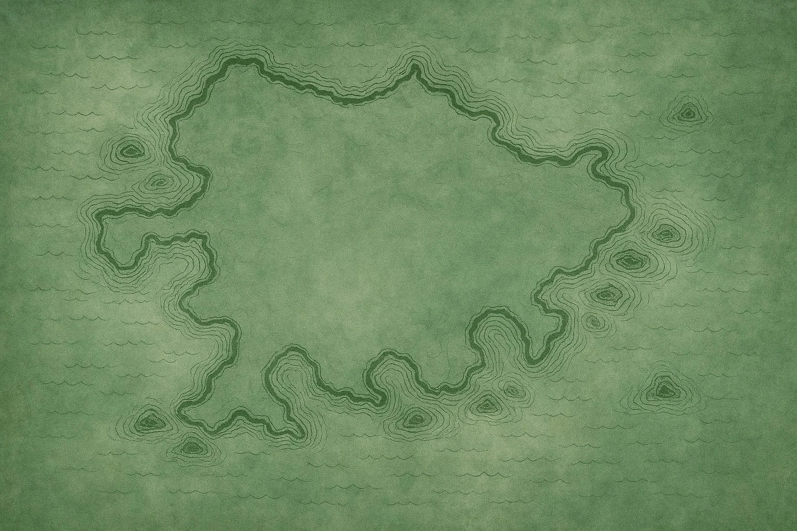
Taverns & Locations
From crowded market streets to lonely frontiers at the edge of the known world, the Wayfarer’s Rest stands wherever the road demands shelter. Each location is shaped by its surroundings, yet bound by the same promise — rest, safety, and sanctuary for all who travel the Marchlands.
Tavern Types
No two roads are alike, and neither are the taverns that stand beside them. Each Wayfarer’s Rest reflects the land, trade, and travellers it serves, while upholding the shared customs that define shelter along the road.
Market Taverns
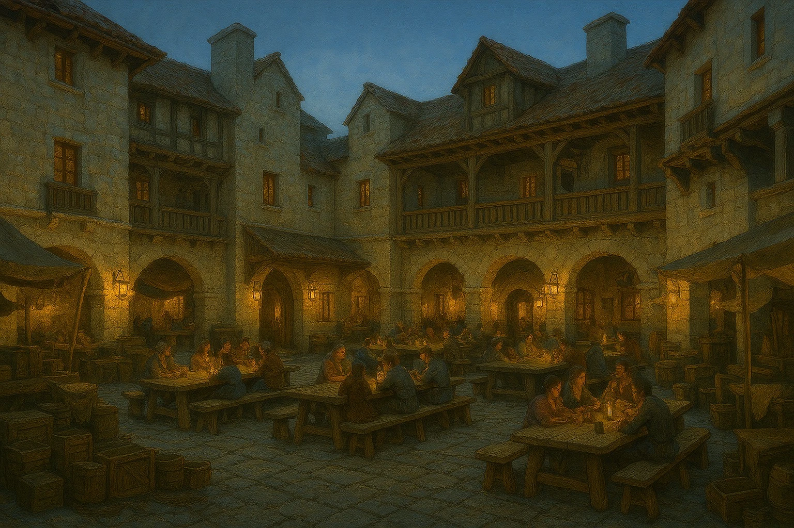
Founded at the heart of busy towns and trade hubs, Market Taverns serve as gathering places for merchants, travellers, and locals alike. These locations are lively, well‑provisioned, and rarely quiet for long.
Coastal Taverns
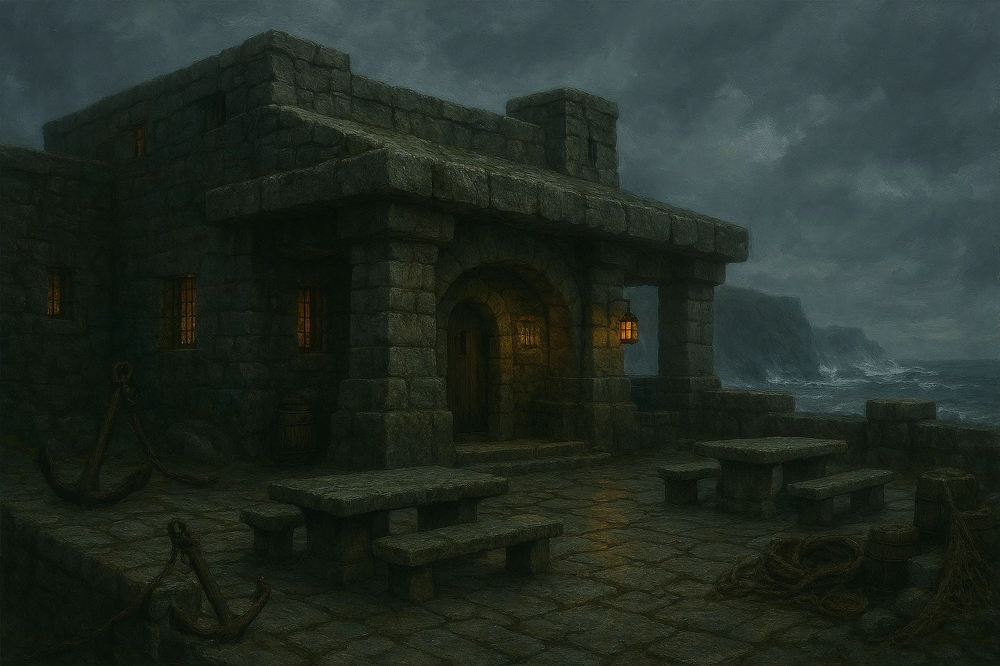
Situated along harbours and sea roads, Coastal Taverns welcome sailors, traders, and those traveling by tide and wind. Salt air, shared news, and the steady glow of lanterns define these outward‑facing rests.
Wilderness Taverns

Hidden far from settled roads, Wilderness Taverns offer refuge where shelter is scarce and the land grows untamed. Found only by those who know the paths, they serve as rare havens deep in dangerous terrain.
Remote Wayhouses
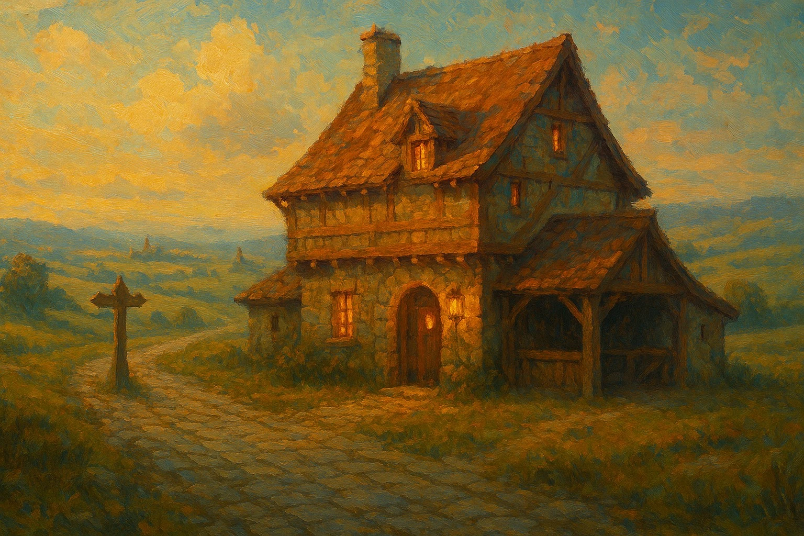
Remote Wayhouses stand between towns, spaced deliberately along long and often hostile roads. Built for necessity rather than comfort, they exist to ensure that no traveller must face the journey entirely alone.
Map of the Realm
Spanning the Marchlands, the road connects places of shelter separated by great distance and danger. This map offers a glimpse of where the Wayfarer’s Rest can be found, marking lantern‑lit havens along routes travelled by merchants, pilgrims, and wanderers alike.
Each lantern marks a tavern — select one to discover more about its location.
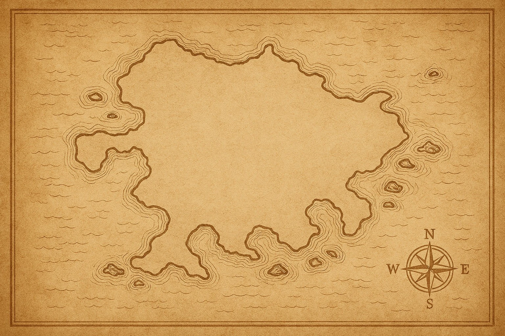
The Gilded Hearth

Location: Eastern inland trade crossroads of the Marchlands
About: Standing beside one of the busiest crossroads in the eastern Marchlands, the Gilded Hearth serves merchants, caravan guards, and townsfolk alike. Lanterns glow beneath market banners as shared tables fill with travellers exchanging news, closing deals, and waiting out the evening before the roads quiet.
Opening Times: Open from first market bell until the square empties at night
The Stonevault Exchange
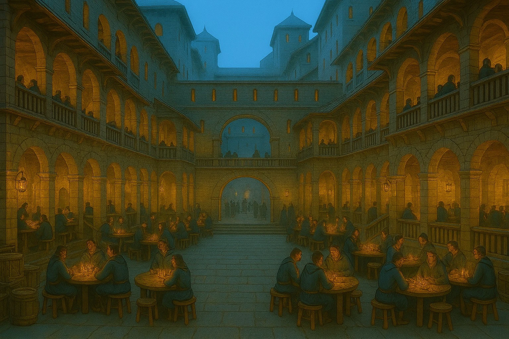
Location: Western trade quarter of the Marchlands, within the inner market wards
About: Built as a permanent house of gathering within the western market wards, the Stonevault Exchange serves caravan leaders, clerks, and travellers moving inland. Its enclosed courtyard and tiered galleries create a sheltered space for long negotiations, shared meals, and the steady flow of news between routes.
Opening Times: Open from late afternoon until the final accounts are settled for the night
The Ledger’s Rest
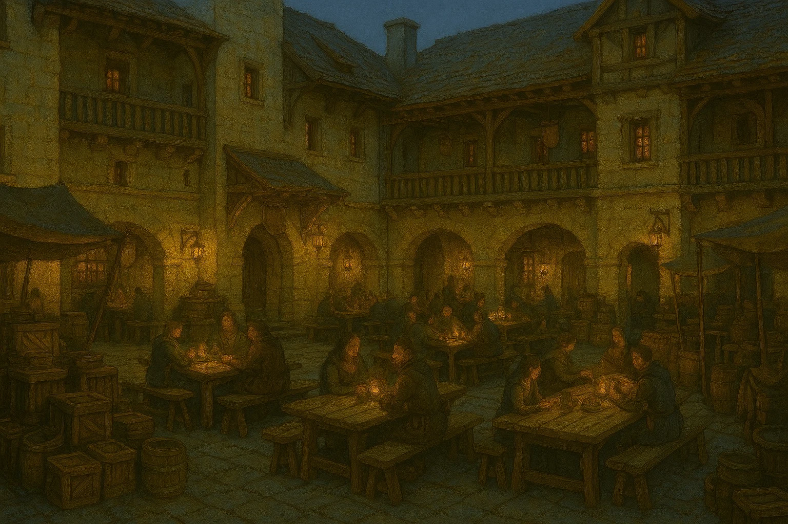
Location: Central trade ward of the Marchlands, where inland routes converge
About: Set within a stone‑built trade ward at the heart of the Marchlands, the Ledger’s Rest serves merchants, factors, guards, and travellers moving between regions. Its open courtyard and surrounding galleries allow room for long evenings of negotiation, shared meals, and the steady exchange of news from every road.
Opening Times: Open from midday until late evening, aligned with the close of trade
The Moonreach Hollow
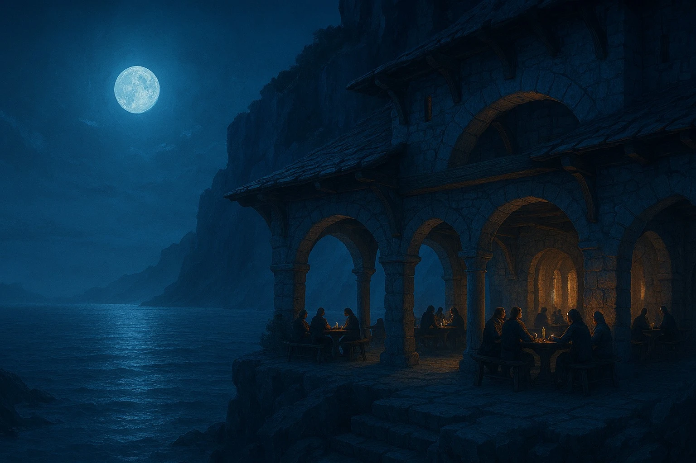
Location: Eastern coastline of the Marchlands, carved into high sea cliffs
About: Set directly into the cliffside, the Moonreach Hollow offers shelter above the waves, with arched stone walkways overlooking the open sea. Lanterns burn beneath the colonnades as travellers gather by night, guided by moonlight and the steady sound of water below.
Opening Times: Opens at dusk and remains lit until the moon sets
The Blackwater Hold

Location: Northern coastline of the Marchlands, along exposed sea cliffs
About: Built of thick stone to withstand wind and spray, the Blackwater Hold serves sailors and travellers sheltering from rough seas. Lanterns burn low at the entrance, guiding those who arrive by night, while the tavern itself stands firm against storms rolling in from the open water.
Opening Times: Open from first light until weather forces the doors closed
The Saltwind Rest
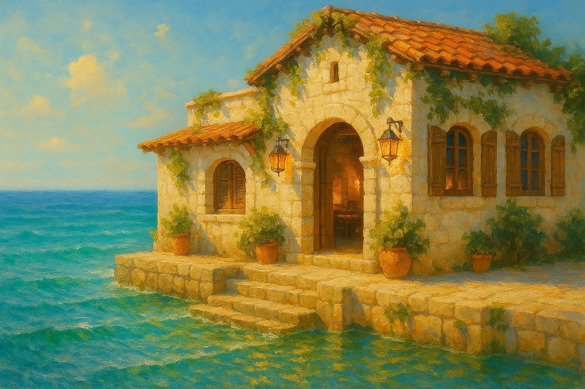
Location: Southern coastline of the Marchlands, along sheltered sea routes
About: Built directly at the water’s edge, the Saltwind Rest welcomes sailors and coastal travellers arriving by tide or road. Open stonework and steady lantern light provide shelter from salt wind and spray, while the sea remains close at hand.
Opening Times: Open daily from late morning until the final tide of night
The Deepwood Watch
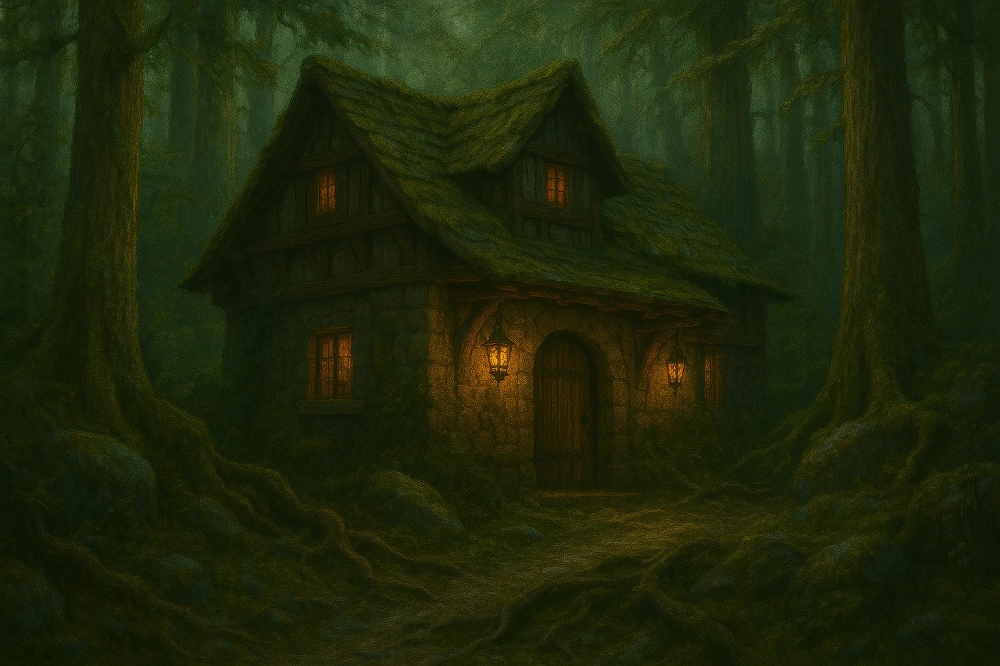
Location: Western forests of the Marchlands, near the edge of the old wilds
About: Set deep within the western forest, the Deepwood Watch offers shelter to travellers who have strayed dangerously far from known paths. Older and more secluded than most wilderness taverns, its thick stone walls and low, lantern‑lit entrance suggest both caution and endurance in a region where the land is slow to forgive.
Opening Times: Open from dusk until dawn, when the hearth is lit
The Stonewake Refuge
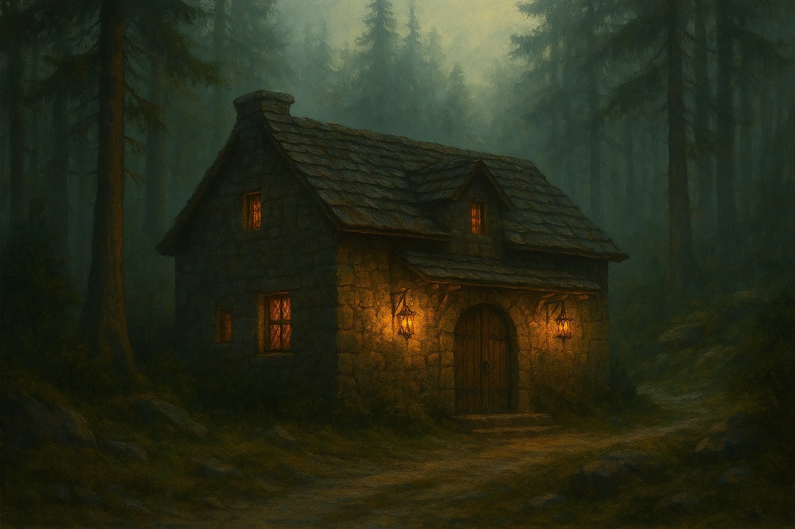
Location: Eastern forests of the Marchlands, near the edge of settled territory
About: Built from local stone at the edge of the eastern forests, the Stonewake Refuge marks the last certain shelter before the wild deepens. Though isolated, it is sturdily kept, offering warmth and rest to those who press beyond the reach of regular patrols and marked routes.
Opening Times: Open from dusk until dawn when the hearth is lit
The Mossbound Hearth
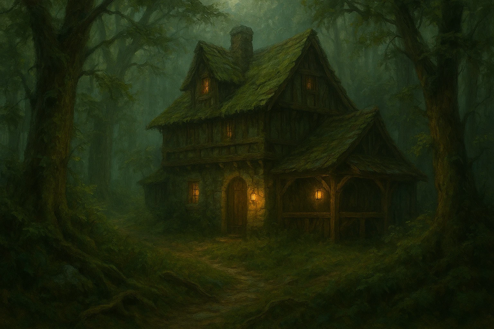
Location: Northern forests of the Marchlands, far beyond marked routes
About: Hidden among the deep northern woods, the Mossbound Hearth offers rare refuge to those driven from the road by weather, wilderness, or misfortune. Built low beneath the canopy and heavily weathered by time, the tavern blends into its surroundings, its lanterns kept deliberately subdued to welcome only those who truly need shelter.
Opening Times: Open from dusk until dawn for those who find its door
The Crossbar Wayhouse

Location: Northern interior route of the Marchlands, where long inland roads divide
About: Standing alone where travelling roads part, the Crossbar Wayhouse exists for necessity rather than comfort. Lantern light marks its presence from a distance, offering shelter, hot food, and guidance to those crossing the open interior before the next settlement lies days away.
Opening Times: Hearth kept lit from dusk until early morning for passing travellers
The Crownward Wayhouse
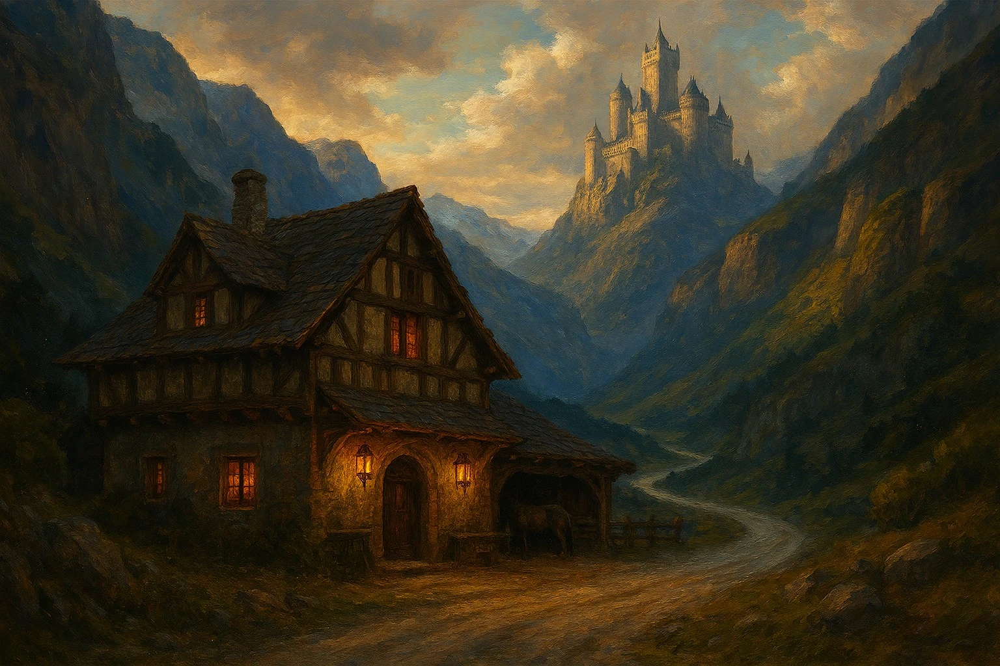
Location: South‑western mountain road of the Marchlands, along the approach to the seat of power
About: Standing along the steep mountain road that winds toward the castle housing the seat of the land, the Crownward Wayhouse serves travellers making the long approach through the western passes. Though modest in size, its lanterns burn bright against the narrowing valley, offering shelter and rest before the road rises toward authority and stone.
Opening Times: Open from dusk until dawn for those arriving before the climb
The First Lantern
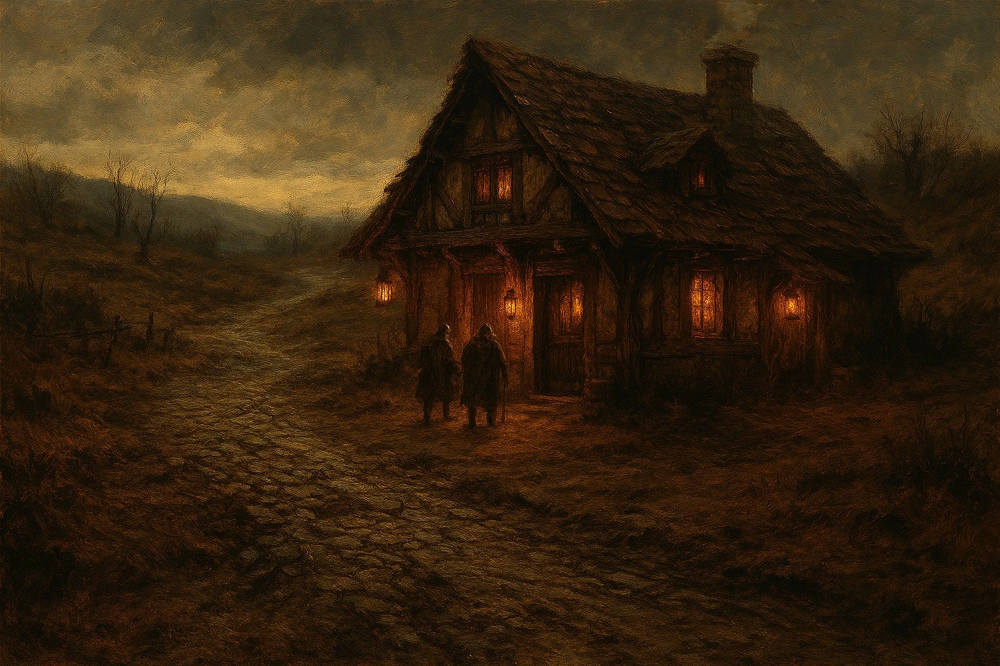
Location: Southern interior road of the Marchlands, at the edge of the earliest rebuilt routes
About: Established in the aftermath of the Reckoning, the First Lantern was the original Wayfarer’s Rest, raised to shelter travellers stranded between broken southern roads and distant settlements. The keepers have deliberately renovated the tavern as little as possible, preserving the original stonework and layout in honour of the structure that first defined the customs, identity, and promise of the Wayfarer’s Rest.
Opening Times: Hearth kept lit nightly, in accordance with the founding tradition
The Last Light
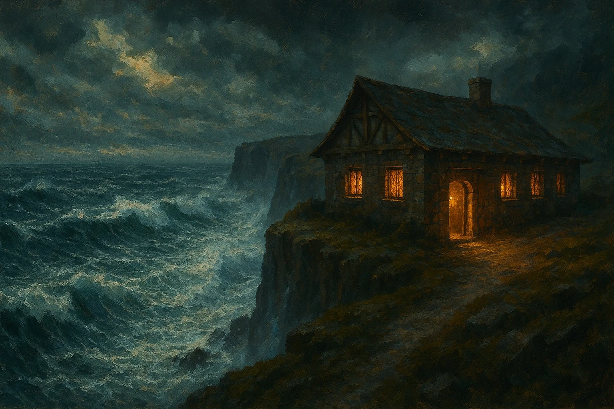
Location: Western edge of the Marchlands, overlooking the final cliffs above the open sea
About: Perched at the edge of the known world, the Last Light is the final refuge before the land gives way to cliff and storm. Maintained against wind and salt, its lanterns burn as a warning as much as a welcome, offering shelter to those who have gone farther than most — and a chance to turn back.
Opening Times: Open when the lantern is lit, weather permitting
Disclaimer: Some Wayfarer’s Rest locations serve travellers only during daylight hours and do not provide overnight accommodation. These smaller taverns are not shown on the map, but appear elsewhere across the site.